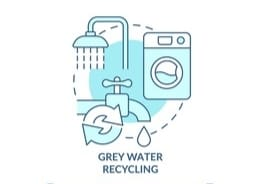

HYDROGEN FROM WASTE TABLET STRIPS
Hydrogen gas is produced from waste tablet strips which contains Aluminum. Aluminum parts of the strips are treated with sodium hydroxide to produce hydrogen gas. Which is then stored in a tank. This method is eco-friendly,feasible and turns waste into clean energy.

GREY WATER REUSE SYSTEM
The idea is to resue the various greywater from households. This methodology involves collecting greywater separately, purifying it by 3 level filteration system and then stored for reuse.It reduces the wastage of freshwater and promotes sustainable and eco-friendly living.